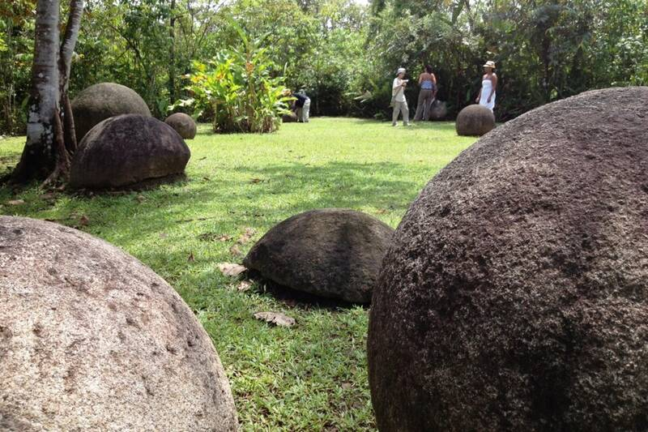

Stone spheres of Costa Rica
Diquís Delta, Costa Rica

More than 300 stone balls attributed to the extinct Diquís culture, dated by excavations to between 300 and 1550 AD and thought to have lined the approaches to chiefs' houses. Their exact meaning remains uncertain. Myths claim they came from Atlantis. 1
Open in the interactive Watcher
Sources
- Stone spheres of Costa Rica Wikipedia